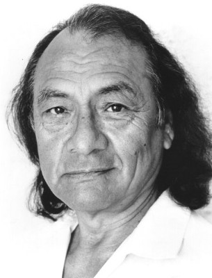
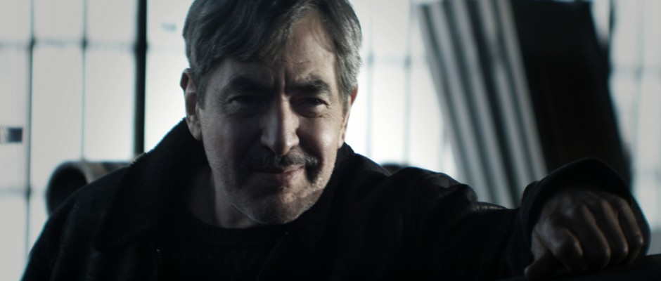

#1745 Das Geisterhaus

 IMDB-Wertung: 6.9 / 10
IMDB-Wertung: 6.9 / 10  Metascore: 0
Metascore: 0 
Esteban Trueba, ein Mann aus ärmlichen Verhältnissen, steigt während der 1920er Jahre in Chile zum Großgrundbesitzer auf. Seine Familie, darunter seine Schwester Férula, aber auch seine Frau Clara leiden unter der Härte und Unerbittlichkeit des Patriarchen. Esteban geht schließlich in die Politik, um als konservativer Senator die Geschicke des Landes mitzubestimmen. Als die Generäle durch seine Unterstützung an die Macht kommen und ihr Terrorregime errichten, fühlt Esteban sich um seine Ideale betrogen.
Jahr: 1993
Dauer: 141 Minuten
FSK: 12
Land: Portugal Studio: Neue Constantin FilmTonspuren:
Untertitel:
Auflösung: 720p (1280x544) Größe: 5591 MB
Genre: Drama, Liebe
Regisseur: Bille August
Drehbuch: Isabel Allende, Bille August
Soundtrack: Hans Zimmer
Darsteller:
- Maria Conchita Alonso als Tránsito
 Antonio Banderas als Pedro
Antonio Banderas als Pedro Sarita Choudhury als Pancha
Sarita Choudhury als Pancha Glenn Close als Ferula
Glenn Close als Ferula Miriam Colon als Nana
Miriam Colon als Nana- Vincent Gallo als Esteban Garcia
 Grace Gummer als Young Clara
Grace Gummer als Young Clara Jeremy Irons als Esteban Trueba
Jeremy Irons als Esteban Trueba- Frank Lenart als Interviewer
-  Joaquín Martínez als Segundo
 Armin Mueller-Stahl als Severo
Armin Mueller-Stahl als Severo- Jan Niklas als Satigny
- Teri Polo als Rosa
- José Mora Ramos als Soldier 1
 Vanessa Redgrave als Nivea
Vanessa Redgrave als Nivea- Winona Ryder als Blanca
 Meryl Streep als Clara
Meryl Streep als Clara- Hannah Taylor Gordon als Blanca, child
-  Jaime Tirelli als Oliver
 Martin Umbach als TV Reporter
Martin Umbach als TV Reporter- António Assunção als Man at Cattlemarket
- Julie Balloo als Young Lady
- Frank Baker als Intelligence Officer
- João Cabral als Soldier
- Carlos César als Ambassador's Driver
- Rogério Claro als Man in Club
- Edith Clement als Midwife
- Oscar A. Colon als Sheriff
- Franco Diogent als Man at the Party
- Pedro Efe als Interrogation Officer
- Fran Fullenwider als Emer Trueba
- Miguel Guilherme als Soldier
- Sasha Hanau als Alba
- Denys Hawthorne als Politician
- Lone Lindorff als Maid
- Josh Maguire als Pedro, child
- Steve Mason als Maestro
- Jean Michel als Musician
- Luís Pinhão als Woodcutter
- Vivian Reis als Indian Girl
- Victor Rocha als Soldier 2
- Carlos Rodrigues als Postman
- Manuela Santos als Saleswoman
- Joost Siedhoff als Father Antonio
- Alexandre de Sousa als Esteban's Driver
- Hellmuth O. Stuven als TV General
- Hans Wyprächtiger als Dr. Cuevas
- Osvaldo Canhita als (uncredited
- Carlos Conceição als (uncredited
- Heitor Lourenço als (uncredited
Datei: X:\1993\Geisterhaus, Das (1993, FSK12, 1280x544).mkv seit 13.08.2015
Festplatte: HD 1992-1995
 Es gibt insgesamt 68 Filme in der Gruppe '1993'
Es gibt insgesamt 68 Filme in der Gruppe '1993'